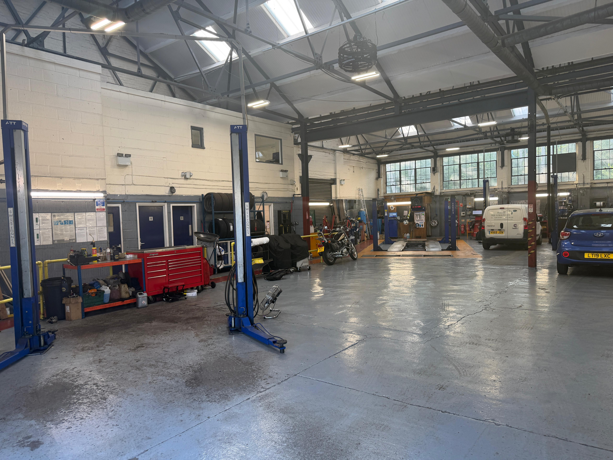
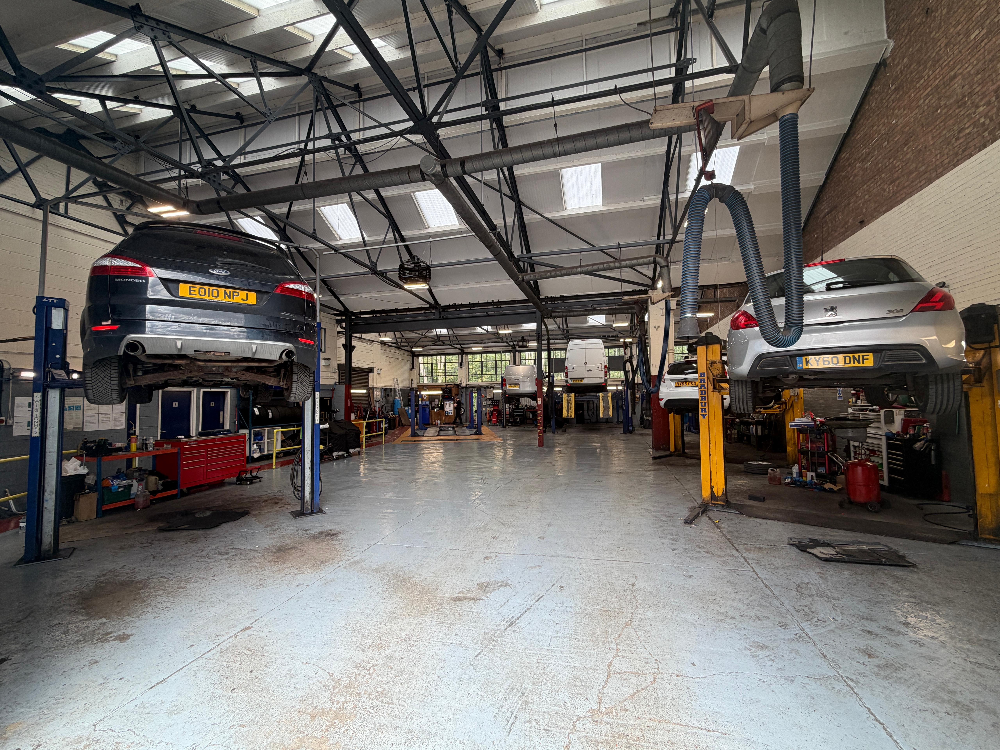
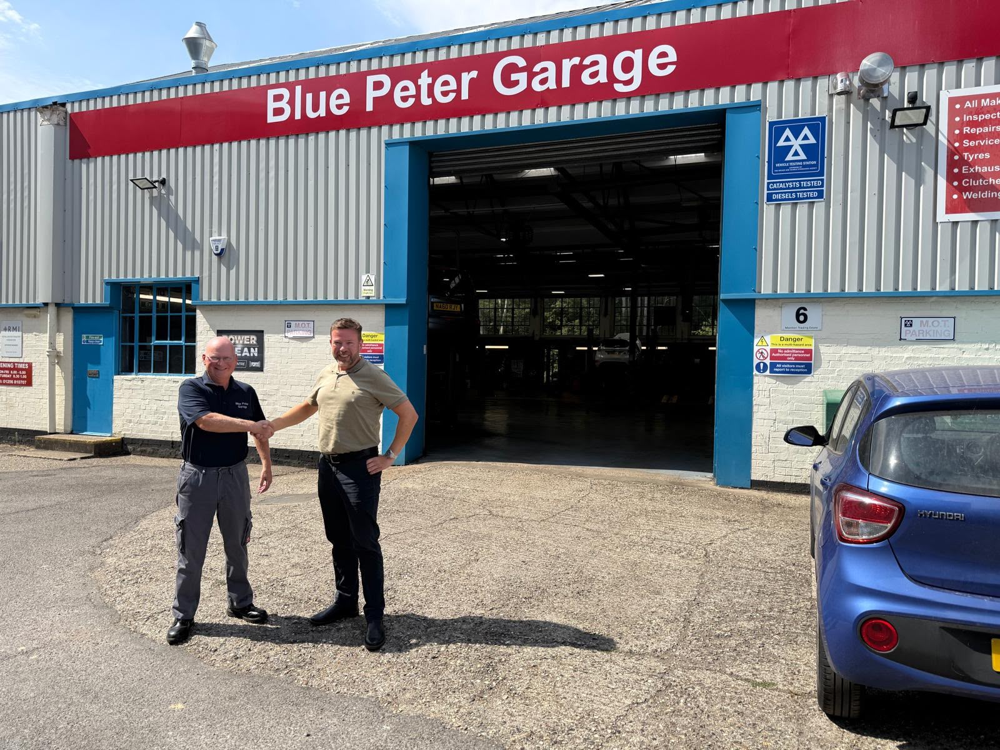
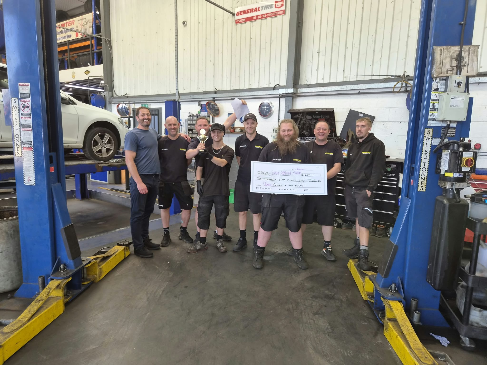

An update from Tobyn
Hi everyone,
It has been a really good summer for the group so far. Many of our businesses are up more than 10% on last year, which is fantastic news and a real testament to the effort everybody has been putting in.
I am incredibly grateful and proud to work alongside so many amazing, skilled people. The results we are seeing across the group are only possible because of your hard work.
Welcome to Blue Peter Garage
This month we also welcomed Blue Peter Garage in Basingstoke into the group. It has been great getting to know the team, and I am delighted to have them with us. I have shared a few pictures of the garage below.
Station Tyres — Monthly Performance Trophy Winners
Congratulations to Station Tyres for winning the Monthly Performance Trophy and the £250 cheque for the third time. That is an amazing achievement, particularly when you consider that only a few months ago the team was really struggling.
I asked the team what their secret was and how they had sustained such an impressive period of growth. They told me they had followed a few clear steps:
- They communicate clearly with their teammates throughout the workshop and with their customers.
- They focus hard on their teammates and have built a strong team culture.
- They follow the right processes and make full use of the new systems.
This approach has worked incredibly well for them, and I hope everyone across the group finds their example useful. It shows what can happen when a team communicates well, supports one another and consistently follows good processes.
Thank you again for everything you are doing. The progress across the group this summer is something we can all be proud of.
Tobyn
Welcome to Blue Peter Garage



Congratulations to the Station Tyres team
